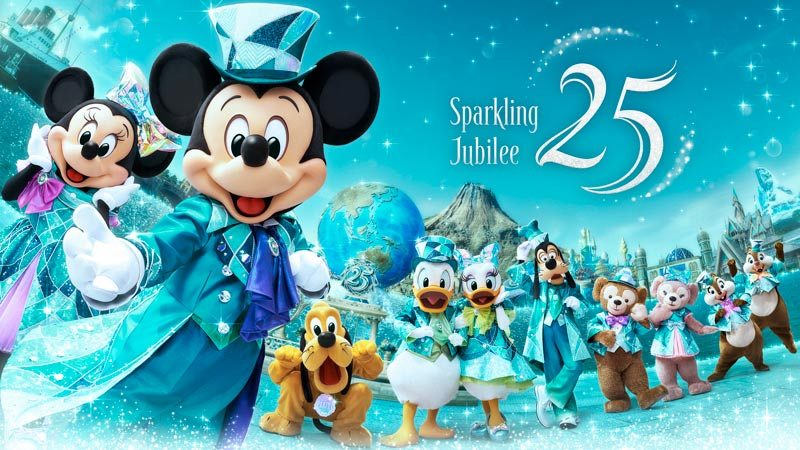

PARKLOG MAGAZINE2026.12.17 / vol.1
ゆりやが
決める号
12/17、シー？
ランド？
行くのは12/17の1日、どっちか1つ。シーかランドか、ゆりやが決める号。材料は全部公式サイトの本当の話です。
01シー特集 ラプンツェルはシーだけp.2
02ランド特集 クリスマスのパレード2本p.3
03動画で予習 公式チャンネルp.4
04データで見る 12/17p.5
05読者投票 どっちにする？p.6
FEATURE 01 ／ 東京ディズニーシーp.2
ラプンツェルは
シーだけ
25周年“スパークリング・ジュビリー”の真っ最中に、クリスマスが重なる日。

東京ディズニーシー25周年“スパークリング・ジュビリー”（2027/3/31まで）
- 01ラプンツェルのランタンフェスティバルシーにしかない。並んで乗れる。急ぐならプレミアアクセス¥2,000/回
- 02ハーバーのクリスマス・グリーティング15分×2回。アメフロにはジュビリーブルーのツリー
- 03夜は花火「スターブライト・クリスマス」ゴンドラの夜景とセットで
予約できるディナーが6軒。おしゃれ度はシーが上。マゼランズ コース¥8,000〜／S.S.コロンビア コース¥7,000〜／カナレット セット¥4,200〜
FEATURE 02 ／ 東京ディズニーランドp.3
クリスマスの
パレードが2本
ディズニー・クリスマス（11/11〜12/25）のど真ん中。昼と夜、どっちも見られる。
ディズニー・クリスマス 2026（11/11〜12/25）
- 01トイズ・ワンダラス・クリスマス！昼のパレード、45分×1回
- 02クリスマス版エレクトリカルパレード夜、45分×1回。そのあと花火
- 03ワールドバザールの大ツリー＋ジョリーフード・プラザシンデレラ城前に初登場の食べ歩き広場
のんびり回れそう。美女と野獣は¥2,500で確実に。ディナーはブルーバイユー コース¥7,000〜7,500／クリスタルパレス ブッフェ¥5,500
MOVIE ／ 公式動画p.4
動画で
予習
東京ディズニーリゾート公式チャンネルの短い動画だけ。
【公式】ラプンツェルのランタンフェスティバル（55秒）
【公式】東京ディズニーシー25周年“スパークリング・ジュビリー”（16秒）
【公式】Disney Christmas Kaleidoscope 東京ディズニーシー（61秒・クリスマスのシー）
【公式】美女と野獣“魔法のものがたり”（68秒）
【公式】エレクトリカルパレード・ドリームライツ（59秒・通常版。12/17はクリスマス版）
DATA ／ 12/17（木）p.5
データで見る
12/17
混雑予想はパークログが毎日測っている平均待ち時間から。価格は公式メニューの実額。
| シー | ランド |
|---|
| 混雑予想 | 50分平均待ち・木曜 | 24分平均待ち・木曜 |
|---|
| 目玉 | ラプンツェル並んでOK／¥2,000 | 美女と野獣¥2,500で確実 |
|---|
| この日 | 25周年＋クリスマスグリーティング15分×2 | ディズニー・クリスマスパレード45分×2本 |
|---|
| ディナー | 6軒¥4,200〜¥12,000 | 5軒¥2,800〜¥7,500 |
|---|
| 夜 | 花火＋ゴンドラ | エレパレ＋花火 |
|---|
| 営業・料金 | 9:00–21:00・¥10,900 | 9:00–21:00・¥10,900 |
|---|
- チケット販売
- 10/1714:00〜
- ディナー予約
- 11/1710:00〜
- 当日
- 12/179:00 開園
READERS' POLL ／ 読者投票p.6
で、どっちにする？
押すと決定。そのあと出るボタンでユウキにLINEしてください。